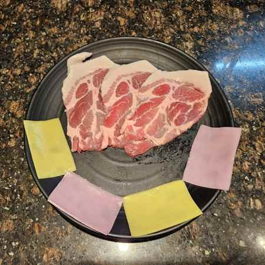
창호지목살 150g
최고등급 마블고기를 3mm로 저며 전주의 창호지 같은 질감을 표현한 목살. 떡쌈과 싸먹을 수 있도록 고안했습니다.
16,000원
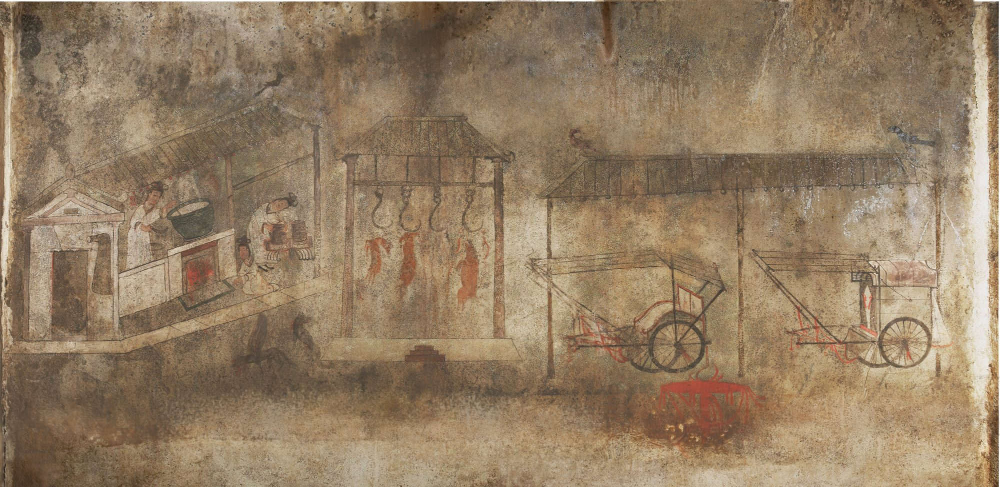
불 위의 맛
문지를수록 한지가 그을리며, 357년 고구려 부엌 벽화가 떠오릅니다.
그림: 안악3호분 부엌 벽화(357년), 공개 도메인
맥적(貊炙)은 맥족(貊族)의 구이로, 우리나라 고기구이 중 가장 오래된 고기요리를 의미합니다.
이규진·조미숙, 『한국고기구이의 문화사』
맥적(貊炙)은 고구려 고분벽화 속, 불 위에 고기를 올려 굽던 한국 고기구이의 원형에서 시작되었습니다.
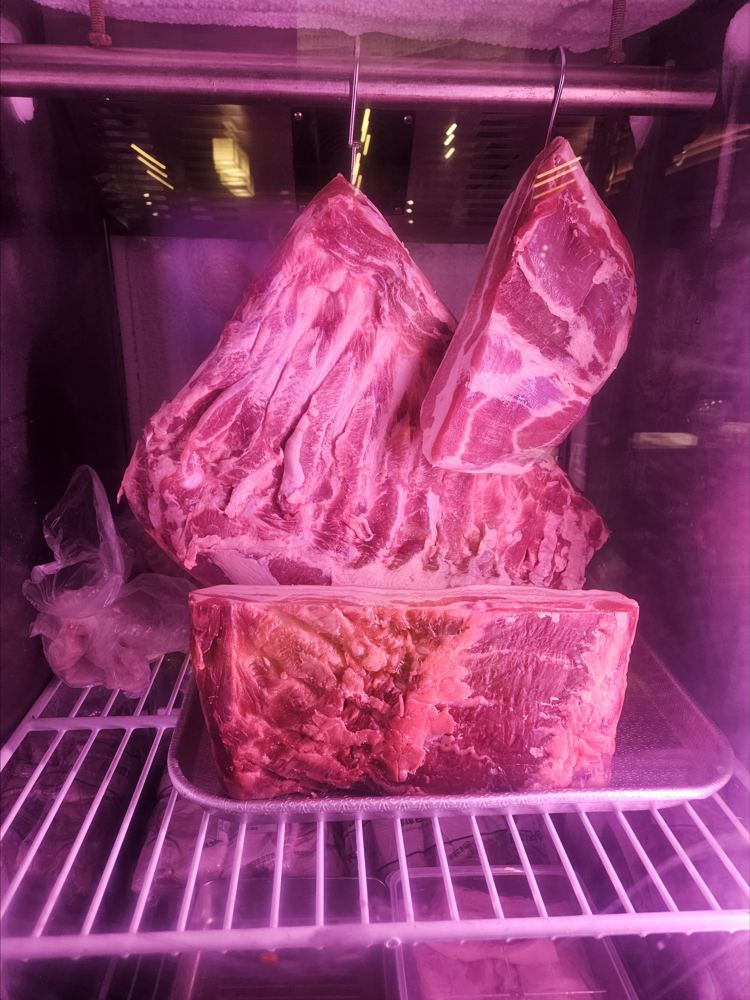
357년 고기 걸이 갈고리 오늘 라이브 키친의 고기걸이 냉장고
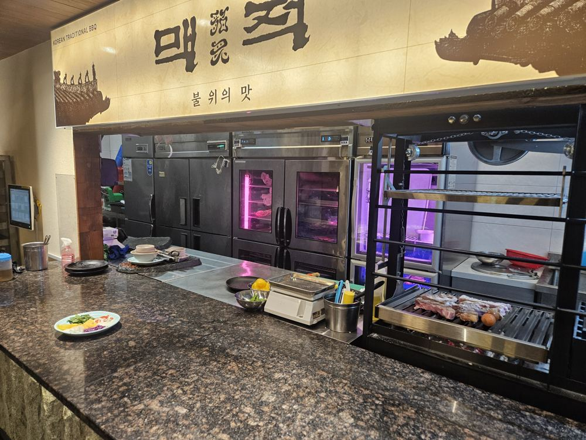
357년 부뚜막의 불 오늘 그릴에 초벌하는 라이브 키친
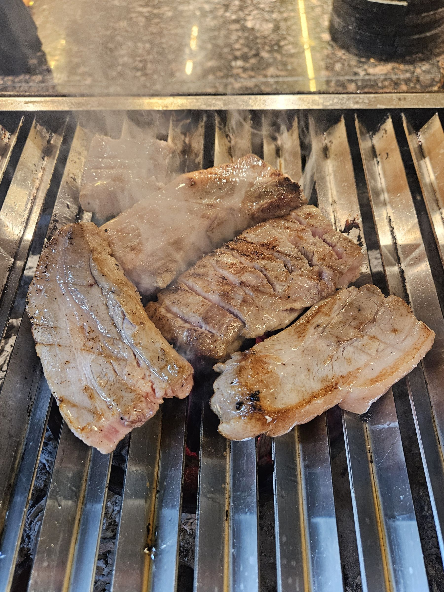
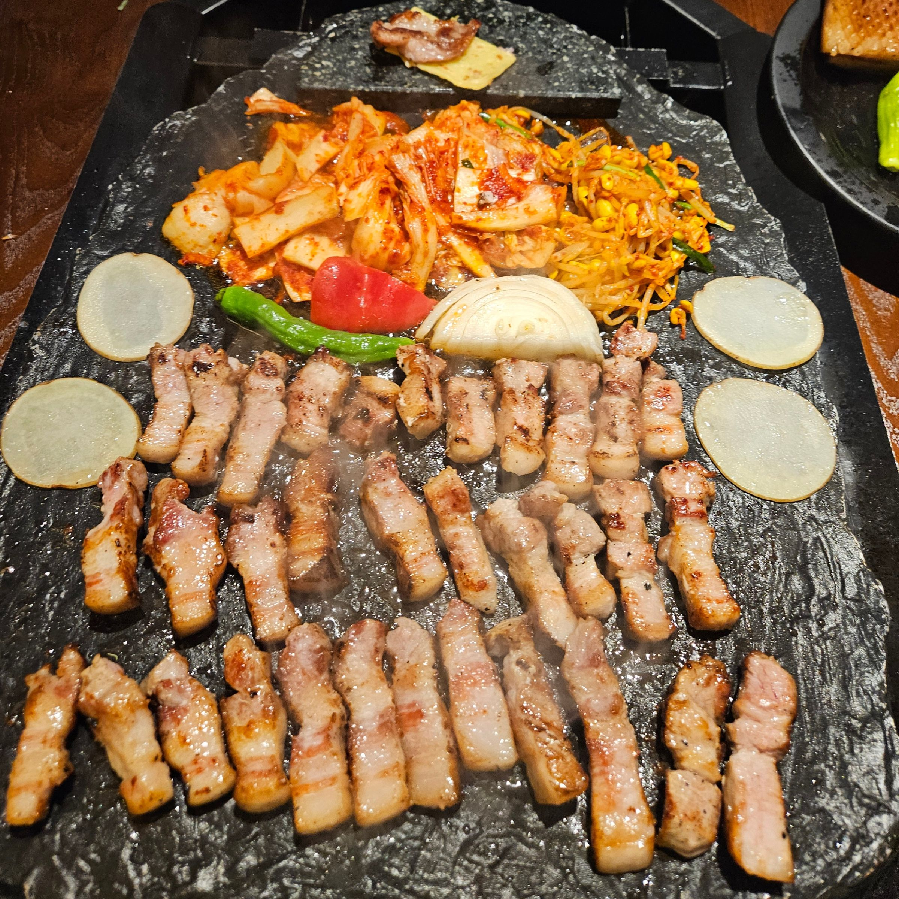
주물판 → 참숯 → 돌판의 3단 마이야르 조리기술. 육즙·불향·식감의 조화.
1주물판
3단 마이야르 전통구이 기법의 첫 단계.
2참숯
그릴에 초벌하는 모습을 라이브 키친에서 그대로 볼 수 있습니다.
3돌판
지역특산물로 만든 특제 된장소스를 발라 초벌한 고기를 전통 돌판에 굽습니다. 현대적 직화구이와 전통 돌판의 조화.
진짜 불맛을 찾기 위한 여정은 오로지 시간과의 싸움, 돼지구이 장인은 불맛을 설계하는 사람입니다. 온도와 시간을 정밀하게 다루는 손길로, 현대적 직화구이와 전통 돌판의 조화를 완성합니다. 원초성과 섬세함이 공존하는 차별화된 맛을 경험하세요.
가장 맛있는 순간을 만들어드리는 직접 그릴링으로 손님을 맞이합니다.
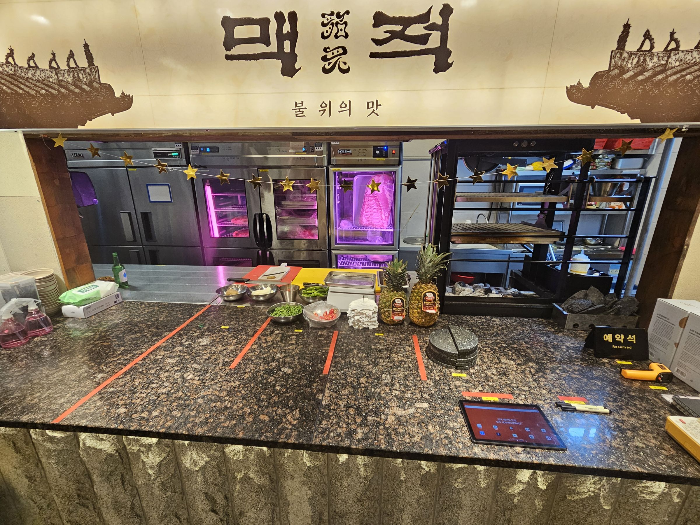
세계가 주목하는 로컬 다이닝 경험. 전통으로 굽고, 지역으로 맛내며, 고객이 사랑하는 브랜드.
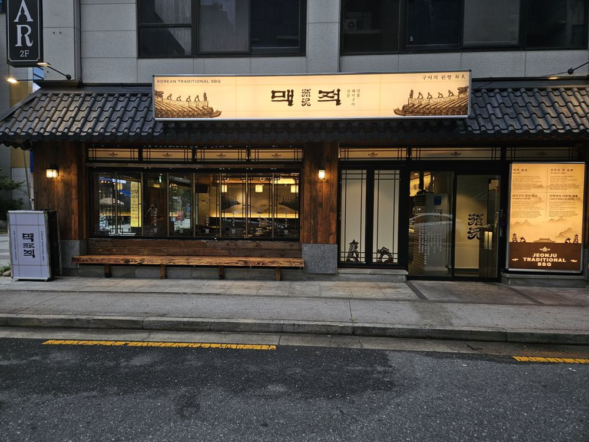
지금
맥적 전주본점 운영
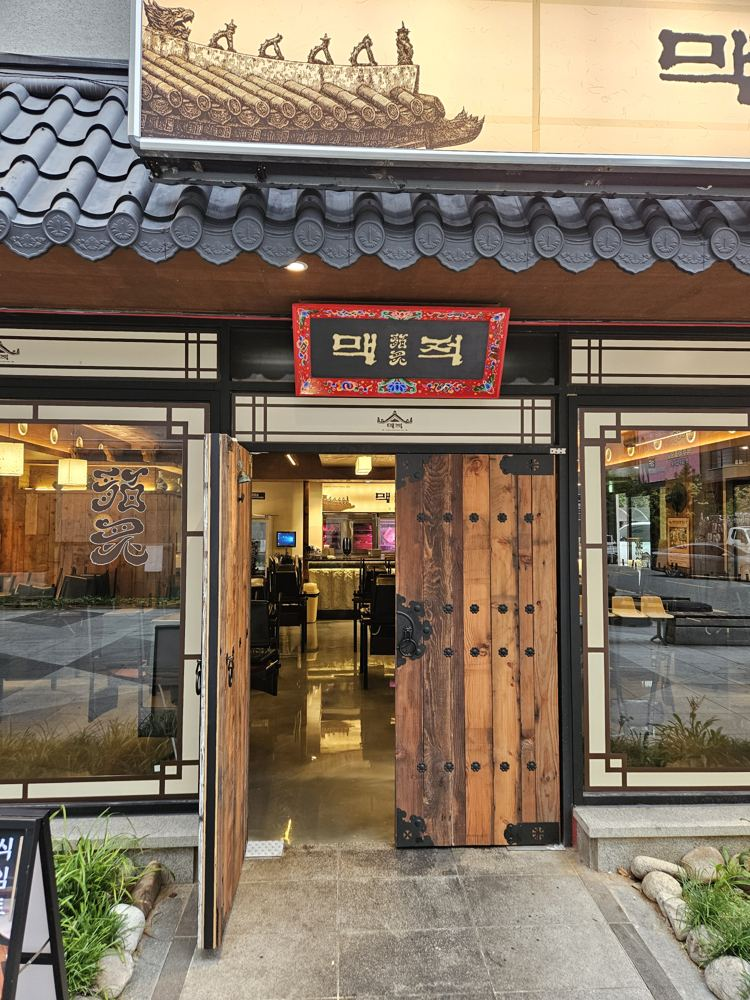
준비 중
직영으로 검증한 모델을 가맹으로
준비 중
창호지목살·세겹살 15일 숙성·등심기왓살 정형, 고기와 소스를 담은 BBQ 패키지
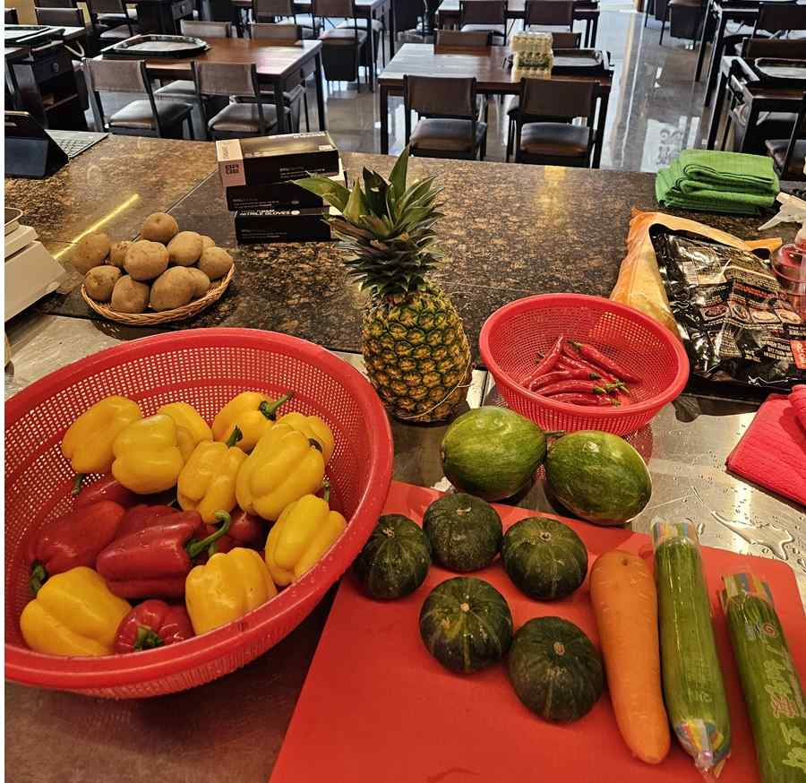
준비 중
전통장류로 만든 특제소스(마늘 육장·보리쌈장 등), 전주비빔볶음밥 소스·된장찌개 소스를 매장 상업용 주방에서 직접 제조
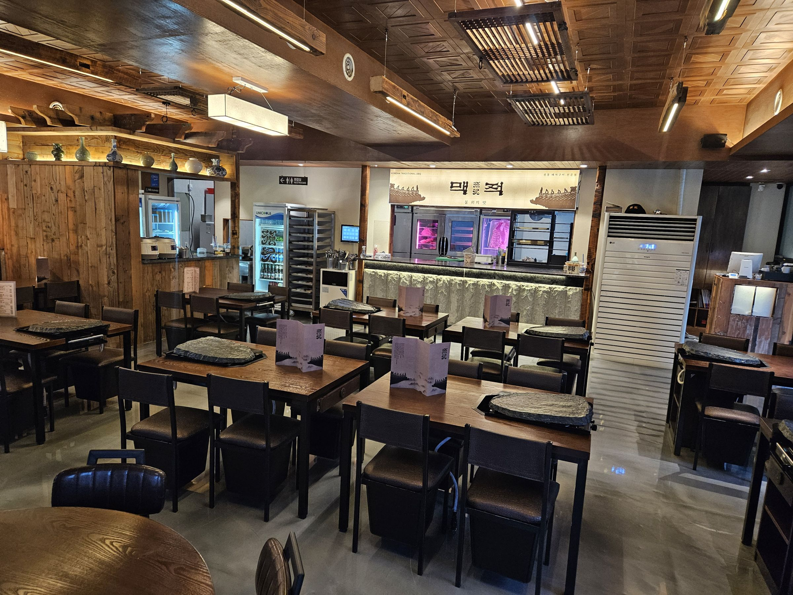
붉은 노을 아래 하루의 무게를 내려놓는 자리, 고기 한 점과 술 한잔에 위로가 스미는 이 곳은 한국인의 사랑방입니다. 그 옛날 주막처럼, 정과 쉼이 고스란히 살아 있는 위로의 공간이고자 합니다.
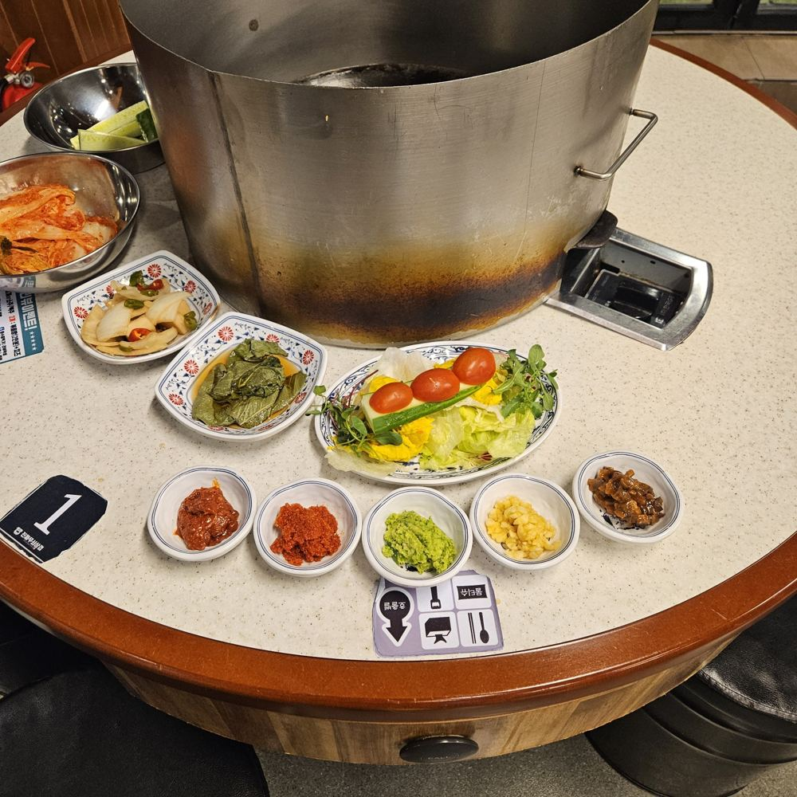
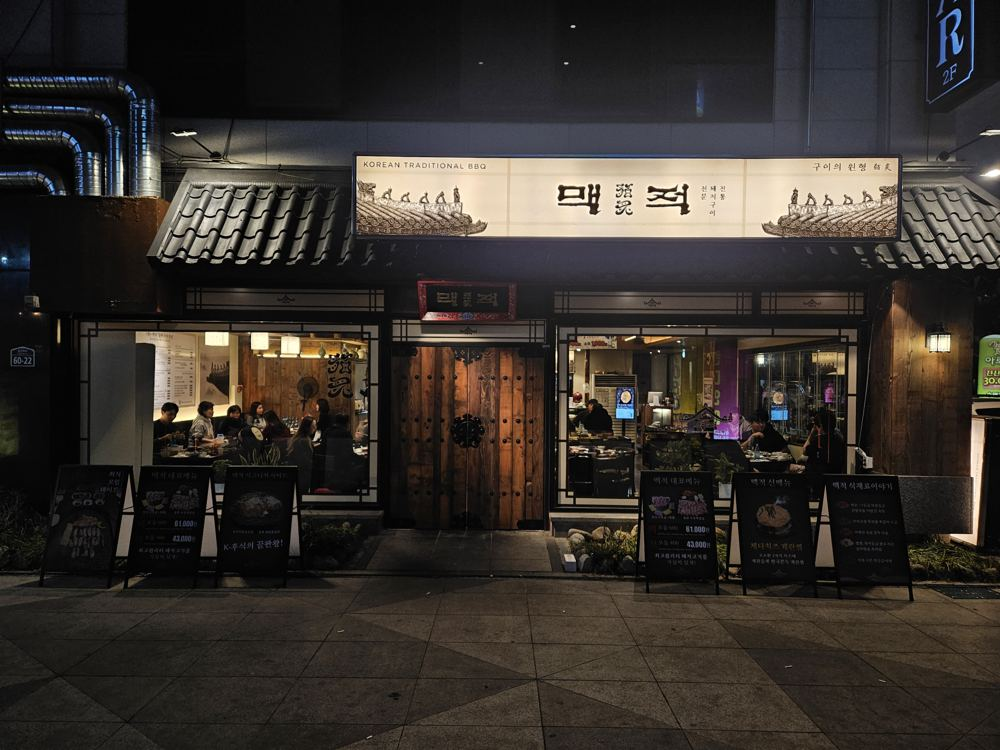
가을의 시작, 맥적은 좋은 고기와 정성스럽게 만든 반찬, 그리고 가장 맛있는 순간을 만들어드리는 직접 그릴링으로 손님을 맞이합니다.
제40-2546564호, 43류 식당업
전주시 공식 관광 플랫폼 「비짓전주」 '전주의 맛 – 삼겹살' 코너
식약처